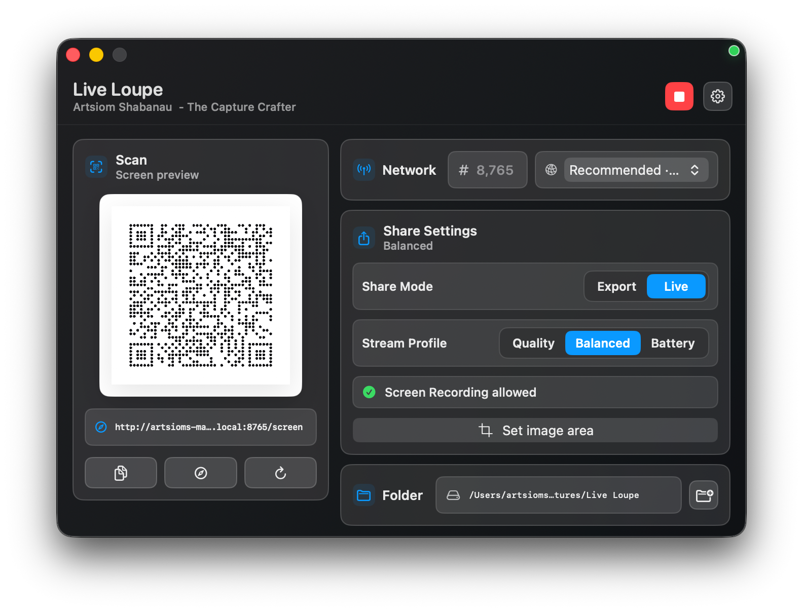
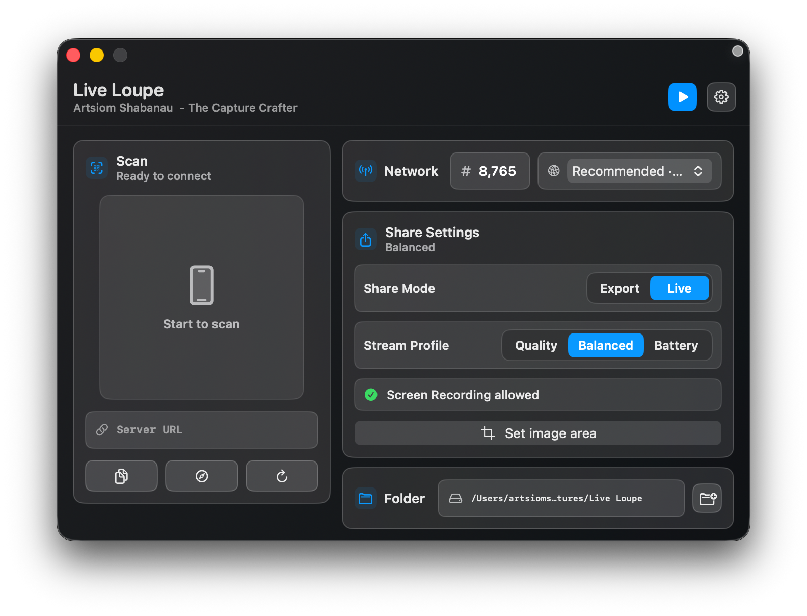
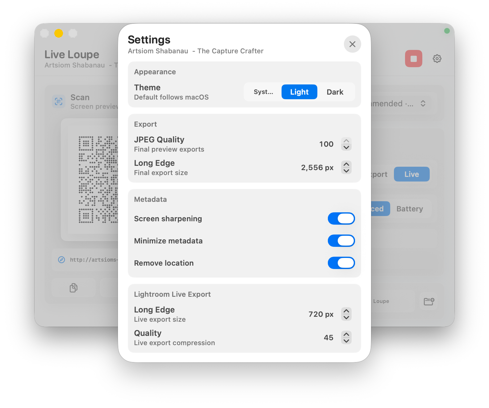
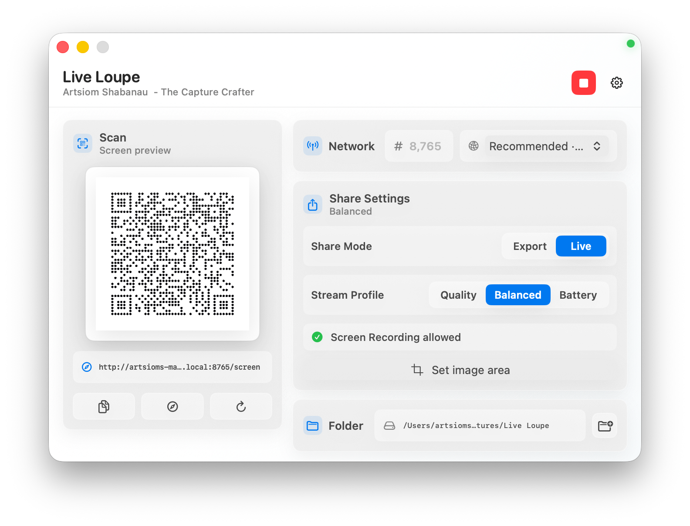

Live Loupe streams your Lightroom Classic previews straight to your iPhone over local Wi‑Fi. No cloud sync, no manual exports, no subscription — scan a QR code and look.

Keep working in Lightroom Classic exactly as you do today. Nothing about your catalog or workflow changes.
Open Live Loupe and point your iPhone camera at the code. You're connected over local Wi‑Fi in seconds.
Color, contrast, sharpness and feel — checked on the iPhone screen where your photos are most likely to be seen.
A Lightroom plug‑in drops JPEG previews into a watched folder. Live Loupe serves them to your phone as a tidy, tappable gallery — perfect for reviewing a finished set.
Stream the current Lightroom view — or just a cropped region — live to your iPhone. Adjust on the Mac and watch the phone update as you work, no exporting in between.
Connect any iPhone in seconds — scan and the gallery opens right in Safari.
Auto-picks a friendly URL like macbook.local:8765, port included.
Multiple interfaces? Pick the best local address from a simple list.
Drop a folder of previews onto the window and you're instantly sharing.
Launch previews straight from the Lightroom Classic export dialog.
Quality, Balanced or Battery — tune resolution and compression to the moment.
Set the exact image area for live screen mode — send only what matters.
Dial in JPEG quality, long‑edge size and metadata cleanup before sharing.
A minimal, native macOS interface that follows your system appearance.
Live Loupe runs a small local HTTP server on your Mac. Your iPhone opens it over the same network. Nothing is uploaded, nothing is tracked, nothing waits on a sync — it's a companion for Lightroom, not another cloud account.

Install the Live Loupe plug‑in for Lightroom Classic and trigger previews right from the export dialog. Choose Export or Live, set a stream profile, and your phone keeps up as you edit.


No. Live Loupe runs a local HTTP server on your Mac and your iPhone connects over the same Wi‑Fi network. Your images stay on your machine and your local network — nothing is sent to the cloud or to us.
No. Live Loupe is fully local and works alongside Lightroom Classic without any Adobe cloud sync. It's a companion tool, not a service.
No. Your phone just opens a web page in Safari after scanning the QR code. There's nothing to install on the iPhone side.
Pick another network address from the list in the app, or set a custom port. Live Loupe surfaces every local interface so you can choose one that works on your network.
Apple Silicon and Intel Macs running macOS 14 Sonoma and later. Live screen preview asks for the standard Screen Recording permission the first time you use it.
Yes. Live Loupe is free and open‑source on GitHub. No subscription, no account, no catch.
Download Live Loupe, scan once, and judge every edit on the screen that matters.
Free & open‑source · Apple Silicon & Intel · macOS 14+